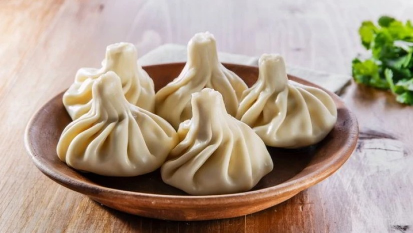

Khinkali (ხინკალი) is one of the most iconic and beloved dishes in Georgian cuisine, a symbol of the country's rich culinary traditions. These delicious, dumpling-like parcels are filled with various ingredients, most commonly ground meat, and are enjoyed by Georgians and visitors alike, both as a comfort food and a celebratory dish.
Khinkali are large, flavorful dumplings that are traditionally filled with a mixture of minced meat (often beef, pork, or lamb), spices, and herbs. They are steamed to perfection and served hot, usually in large quantities. The dough is soft but sturdy enough to hold the juicy filling inside.

One of the distinctive features of khinkali is the way they are shaped. The dough is twisted at the top to form a "purse-like" handle, which makes them easy to hold. This distinctive shape is not just aesthetic; it serves a practical purpose, as the "handle" is the part you hold when eating the dumplings.
The Filling
While the most common filling for khinkali is a mix of beef and pork, other variations exist, including lamb or chicken. The meat mixture is seasoned with black pepper, onions, garlic, and a variety of herbs like cilantro or parsley. One of the most important elements of khinkali is the juicy broth that forms inside the dumpling during the cooking process, thanks to the way the meat is prepared.
In addition to meat-filled khinkali, there are also vegetarian versions, which might include ingredients such as mushrooms, cheese, or potatoes, seasoned with similar spices.